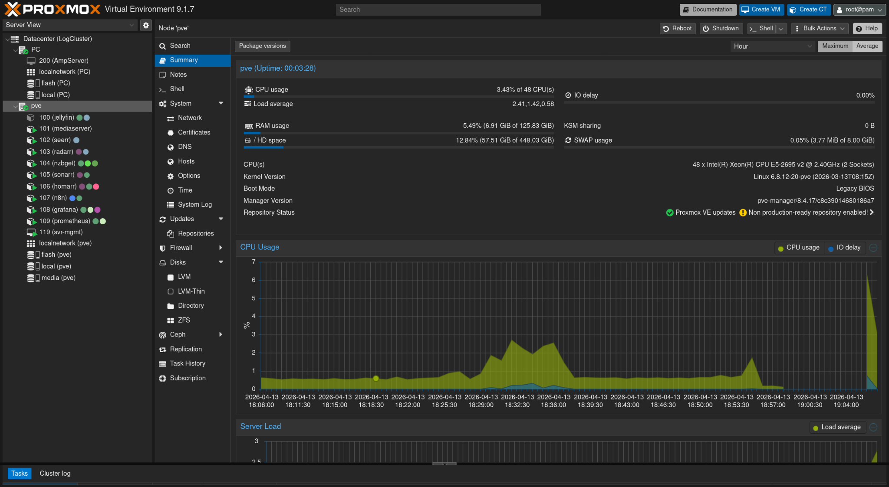

Virtualization Layer
Proxmox is used as the primary platform for running and managing lightweight containers and services from a single host.
This project is a Proxmox-based home lab built to host self-managed services, test deployment workflows, and improve practical skills in systems administration, networking, automation, and monitoring. It functions as both a working environment and a technical learning platform.

This environment runs multiple containers and services on Proxmox, with each service separated by role to improve maintainability, troubleshooting, and resource control.
Proxmox is used as the primary platform for running and managing lightweight containers and services from a single host.
Applications are split across separate containers so updates, failures, and configuration changes remain isolated.
The lab is used to practice deployment, storage planning, network configuration, remote access, and performance tuning.
These are the major services hosted in the environment and the role each one serves inside the lab.
Jellyfin is used to organize and stream media from a self-hosted library. This service helped develop experience with storage mapping, permissions, remote access, and hardware transcoding.
Radarr, Sonarr, NZBGet, and Seerr work together to automate media requests, acquisition, and organization. Building this stack required handling service communication, shared mounts, application permissions, and directory planning.
n8n is used to create automation workflows for real tasks such as parsing structured information, moving data between services, and reducing repetitive manual work.
Prometheus collects metrics while Grafana visualizes performance data. Together they provide visibility into CPU usage, memory usage, service behavior, and trends over time.
Shared storage is exposed to selected services through managed mounts, making it possible to separate compute from storage while still giving containers controlled access to media and data directories.
The lab also supports experimentation with network access, internal service routing, remote connectivity, and segmentation between management and application traffic.
This project was useful because it turned abstract IT and systems concepts into repeatable hands-on work.
The main lesson from this home lab is that infrastructure is not just about launching services. It requires planning, dependency management, storage layout decisions, reliable networking, and continuous troubleshooting. Operating this environment built practical confidence in diagnosing failures, tracing resource issues, organizing services by role, and improving systems over time rather than treating deployment as a one-time task.